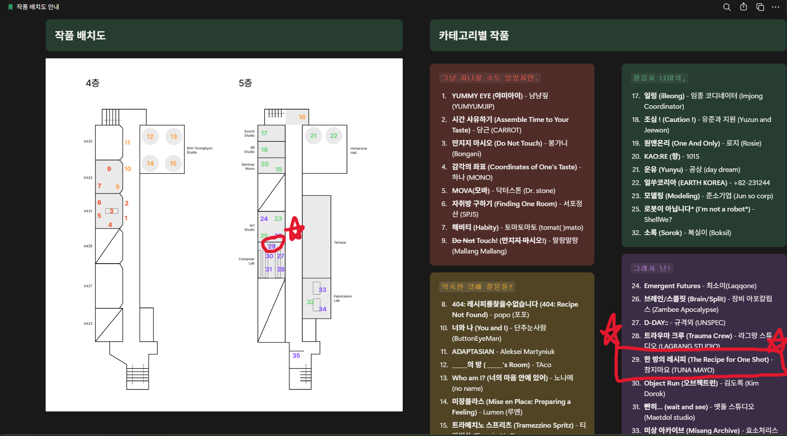
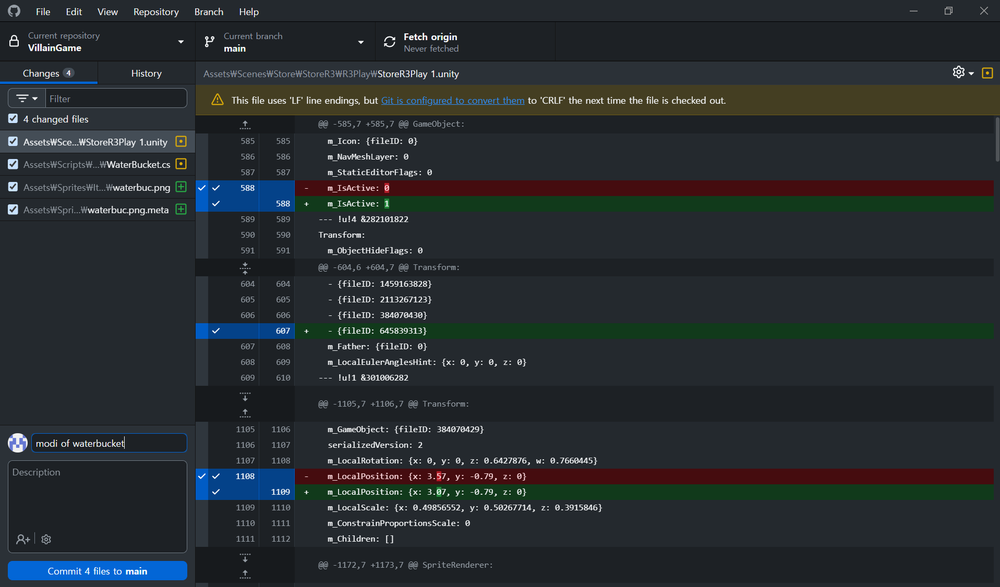
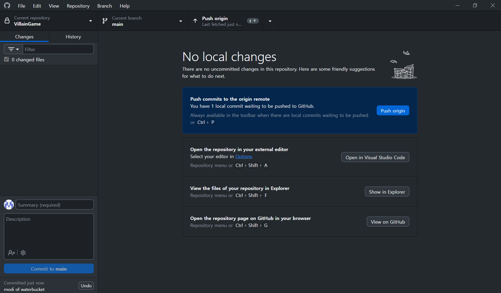

지식융합미디어학부 26학번 팀원 4명이 아이디어 기획부터 핵심 시스템 설계, Unity 2D 기반 게임 개발까지 공동으로 함께 완성한 추리 · 퍼즐 · 개그 장르의 프로젝트명 "한방의 레시피"입니다.

- ATC 작품 배치도

- github 사용 예시 화면 1

- github 사용 예시 화면 2
아래는 프로젝트 시 사용했던 깃허브 링크와 노션 링크입니다.
깃허브 링크게임의 전체적인 주제는 '다양한 장소에 나타나는 빌런들을 참신하고 기발한 방법으로 퇴치하는 것'입니다. 총 4개의 장소 중, 제가 개발을 담당한 편의점 챕터에서는 매장에 등장하는 진상 손님들을 참신하고 재미있는 퍼즐 요소로 쫓아내는 스테이지를 구현했습니다.
아래는 직접 구상하고 개발한 편의점 챕터의 유니티 구동 화면입니다.
- Round 1 게임 플레이 화면(https://youtu.be/ApLIvaehjnE)
- Round 2 게임 플레이 화면(https://youtu.be/M-ahWb5tTK4)
- Round 3 게임 플레이 화면(https://youtu.be/Pnbu8dHnuz8)
게임 개발에는 Unity Hub(Unity 2D Engine)와 VS Code(C# Scripting)를 사용했습니다. 개발 진행 중 기술적인 한계나 복잡한 C# 로직 구현이 필요한 구간에서는 AI 보조 도구를 적극적으로 활용하여 코드 기반을 다졌습니다.
그러나 AI가 생성해 준 코드를 프로젝트에 적용하는 과정에서 코드와 코드 간의 상호작용 꼬임, 오브젝트 참조(NullReferenceException), AI의 과도한 추론으로 인해 생긴 코드 오작동 등 다수의 디버깅 이슈가 발생했습니다.
현재 ATC 전시를 앞두고 관객 인터랙션 최적화, 사운드 연동 및 최종 버그 수정을 진행하고 있습니다. 전시 현장에서 관객들에게 몰입감 있는 경험을 전달하는 것을 목표로 하고 있습니다.